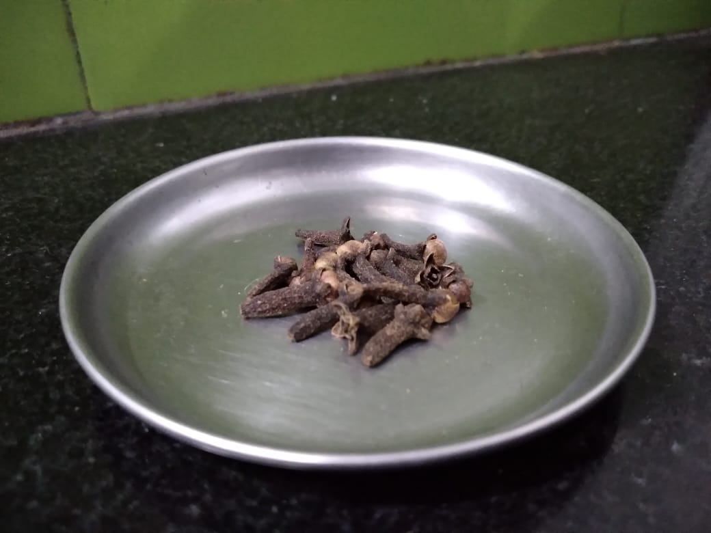

Most of us have forgotten about our traditional home remedies. There are many remedies to cure cough, sore throat, sinus, headache and what not? With traditional home remedies, most of them are interrelated to each other like Flu with cough.
Hot milk mixed with a table spoon of Pepper and Turmeric. It can be consumed at any time, having it hot has good relief and having it few times a day decreases cough.
Pepper and Turmeric has some amazing antiseptic, anti-inflammatory, anti-microbial, anti-allergic properties.
This is also called as Golden Milk.
1. Pour the milk into a small pot let it be heated below boiling temperature.
2. Add some ground turmeric, and one-fourth of powdered black pepper.
3. Let it be heated simmer for 10 minutes
to let the flavours all smelt and enjoy the hot drink.
4. Don't leave the pepper which is settled at the bottom.
5. This will soothe your throat and in few minutes you are all set and relieved.
This will soothe your throat and in few minutes and you will be better.
Honey is used during sore throat. It is one of the best remedy for cough.
You can simply have a spoonful of honey but let it flow into your throat gradually, that’s the perfect way to take it, which is effective.
Also, you can have two teaspoons of honey, lemon in warm water with green/herbal tea this is instant relief.
Steam inhalation is one of the most widely used in every home and across the globe.It smoothens and opens the nasal passages and does give relief from the symptoms of a cold or sinus infection.

Process
1. Let there be a vessel whose mouth is wide so that you can have the steam coming out of vessel and feel it on your face.
2. Add a pinch of Turmeric, few Neem leaves, few drops of Eucalyptus oil or a pinch of Vicks into
the water.
3. Let the water be boiled to the boiling temperature.
4. Have the Vessel on the floor, sit in front of the vessel and cover yourself with a blanket Inhale the vapours coming from the boiling water intermittently some
out of the blanket so that you are not suffocated.
5. Continue this process until you sweat out completely where you can feel body is easy and comfortable.
6. You will be feeling fresh, Wipe your face with a towel and don't sit
under the Fan for at least 30 minutes after the steam inhalation.
7. Repeat this process thrice to four times a day your Flu, Sneeze sore throat is gone.
SStomach ulcers (gastric ulcers) are open sores within the lining of the stomach. They are a type of peptic ulcer, which is related to acid present in the stomach that causes damage stomach lining surface. They are often extremely painful.
1. Drink cold milk in the morning in a empty stomach.
2. Mix ghee and rice/idli etc. and eat it in the start of your food.

If you have a toothache, it’s important to figure out what’s at the root of your discomfort. From there, you can determine how to best relieve any pain, swelling, or other symptoms.
Clove has been used to treat toothaches throughout history, because the oil can effectively numb pain and reduce inflammation. It contains eugenol, which is a natural antiseptic.
You can use clove/ clove oil. Add few drops of clove oil in a cotton swab and keep it in between the affected teeth or you can keep a clove.
Throat pain is extremely common and can be caused by a variety of ailments that affect most of us at usually during rainy season and whenever we have cold beverages.
The most prevalent causes of a sore throat may include a cold virus, acid reflux, or allergies.
Gargling is one of the best remedy for throat pain. For this add few amount of rock salt in warm water, having it bit hot has more effective relief.
Anaemia is a medical condition characterized by the lack of healthy blood cells in the body. It is reported as a low haemoglobin count in the blood. Low haemoglobincan has many effects such as dizziness, weakness, pale skin etc.
We can come over Dates by having rich iron food. The foods which are rich in iron are:
1. Green leafy vegetables, like spinach
2. Nuts
3. Seafood
4. Fruits like apples, banana and pomegranates
5. Beans etc.
Loss of hair can be controlled by using shallots.
Process:
1. Take shallots and peel it.
2. Make a paste of it without adding water or anything.
3. Apply this paste to each and every root of the hair.
4. Let it sit for 30mins and rinse your hair. 5. This will increase
the hair density and in few weeks there will be less hair scarcity.
Another remedy is using shikakai(known in India). It is a traditional Indian hair remedy. Uses of it are:
1. Softens hair
2. Fights the stubborn dandruff
3. Delays greying of hair
4. Removal of lice
5. Boosts hair
growth etc.
Indigestion also called dyspepsia or an upset stomach is a general term that describes discomfort in your upper abdomen. It's a feeling of fullness soon after you start eating.
Process:
1. Add some amount of jeera into a fry pan and roast it for few minutes.
2. Add 1 liter of water and let it boil.
3. Pour it in a glass when the water becomes half.
4. Drink it when it is hot as it is more effective.
Gastritis is an inflammation caused in the stomach.